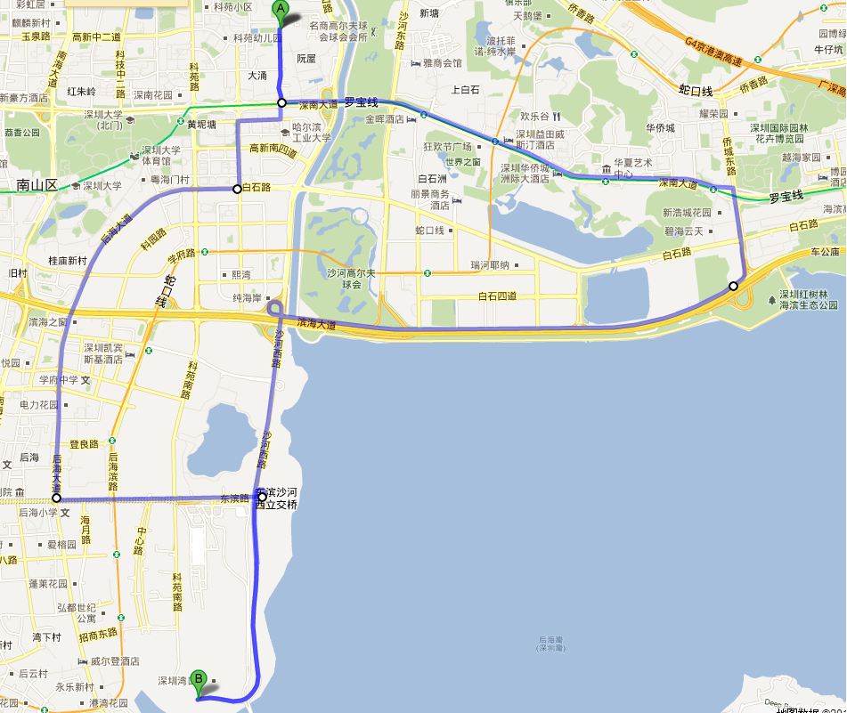

12：40左右从家里出发，到高新园麦当劳吃饭。
13：30左右出发，沿着深南大道到红树林。本想想往福田，罗福方向继续走的，结果走反了，一直沿着海
岸线骑到了后海蛇口深港大桥。
16：30左右开始往回走，问了几次路...望海路->东滨路->后海路，18：00左右又回到了高新园麦当劳吃饭，
然后回家。
google 地图了下，一共骑了27公里左右。
本来想去看看福田那边的市区的样子的，结果都在吹海风了...现在的天气，太阳晒着也不是很热，骑着车，
吹吹风，挺舒服的。
中华民俗村那里有一条绕着几个景区（民俗村、世界之窗、华侨城等）的观光轻轨，时间一共25分钟，下次有机
会去试一下。民俗村附近还有一个何香凝美术馆，免费的，可惜今天骑车，下次有机会也去观摩一下。
2012-10-5
--------------
